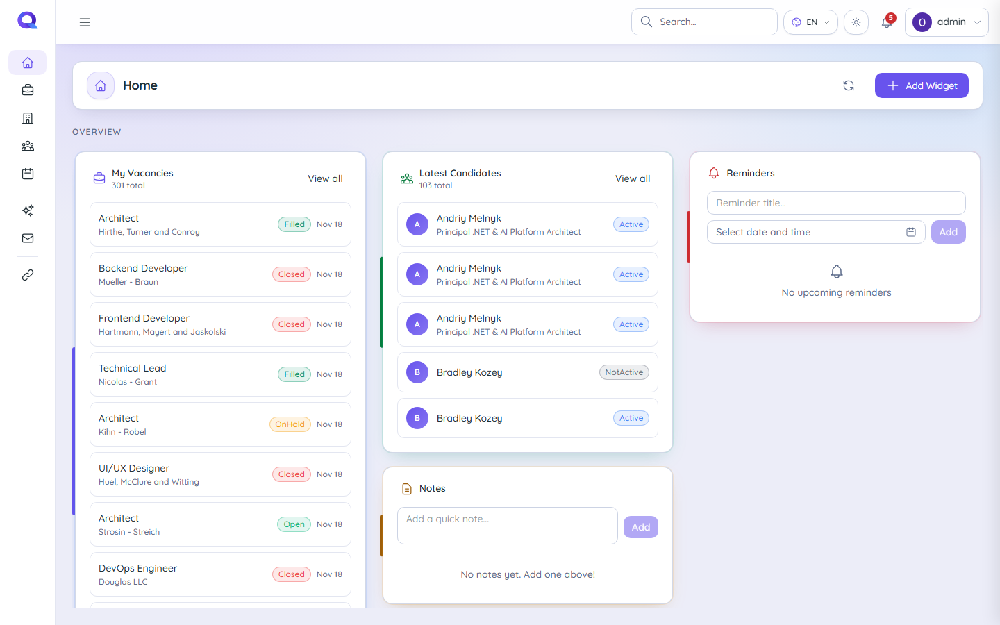
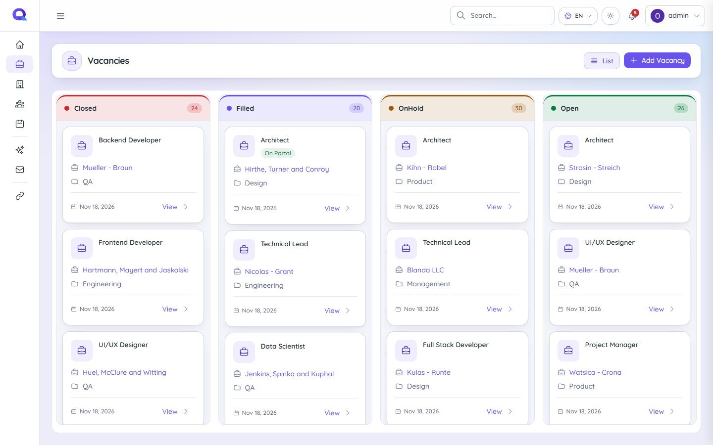
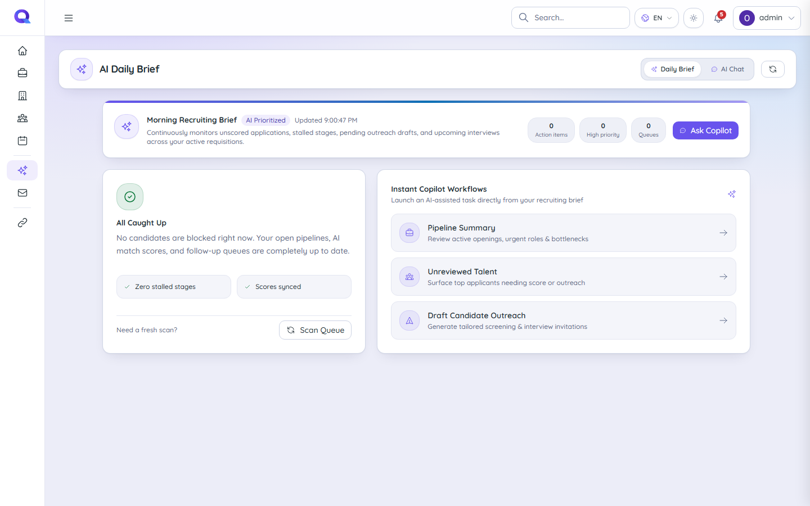
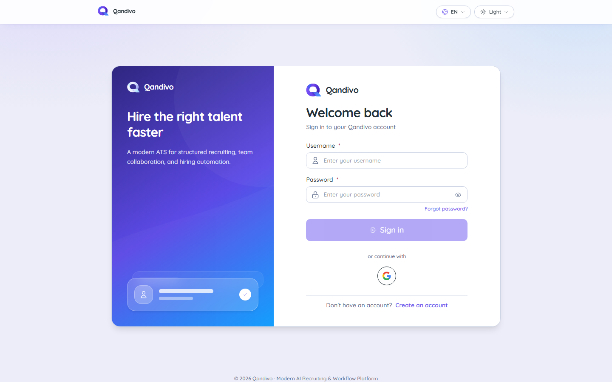

Candidates, Vacancies & Kanban
Adaptive Kanban with status-colored headers, metadata-driven GraphQL filters, sticky command bars, and header bulk actions.
Explore Recruiting →Qandivo unifies full-cycle recruiting, Kanban pipelines, candidate self-booking portals, visual DAG workflow automation, Cosmos DB semantic vector search, and explainable Azure OpenAI scoring in a modular multi-tenant monolith.

Built for recruiters, hiring managers, candidates, and platform administrators with strict RBAC and record-level access control.
Adaptive Kanban with status-colored headers, metadata-driven GraphQL filters, sticky command bars, and header bulk actions.
Explore Recruiting →Branded tenant career pages with open CV applications plus tokenized portals where candidates track stages and book interview slots themselves.
Explore Portals →Conflict-checked interview scheduling in Month/Week/Day/List views, bidirectional Google Calendar sync, and SignalR Work Inbox triage.
See Scheduling →Multi-dimension AI fit scoring (0–100) with strengths/gaps, Morning Recruiting Briefs, streaming chat, and JD synthesis.
Explore AI & Scoring →Cosmos DB DiskANN semantic search across entities, drag-and-drop DAG workflow studio, JSON trace logs, Hangfire jobs, and Connectors.
Explore Automation →Role-based permissions, record-level Read/Write/Delete/Share grants with expiry, Stripe quotas, and synchronized EN/UA localization.
Explore Security →Every module is engineered around unified design tokens, live Light / Obsidian Dark / Ember themes, and synchronized English / Ukrainian localization.
Manage requisitions and talent pools side by side in status-colored Kanban boards or metadata-driven GraphQL tables with multi-select bulk actions and sticky entity headers.

Publish openings to tenant-branded career pages, let applicants track live progress through tokenized links, and allow candidates to book interview slots directly into synced calendars.

Stream recruiting insights and job descriptions in Copilot chat, score every candidate transparently on a 0–100 rubric, and search by conceptual meaning in Cosmos DB DiskANN.

Automate multi-step hiring flows triggered by domain events, inspect formatted JSON node logs, connect external tools, and enforce strict RBAC plus record-level ACL sharing.

Switch themes at the top of the page — every screenshot and gallery updates across Light, Obsidian Dark, and Ember.

Refined folded-ribbon identity, password visibility toggle, circular Google OAuth Sign-In, and theme/language dropdowns.

Real-time SignalR task queues filtered by Recruiter, Hiring Manager, and Coordinator with instant acknowledgement.

Runtime AI thresholds, Circuit Breaker settings, scheduled Hangfire jobs, and audit history scoped to SuperAdmins.